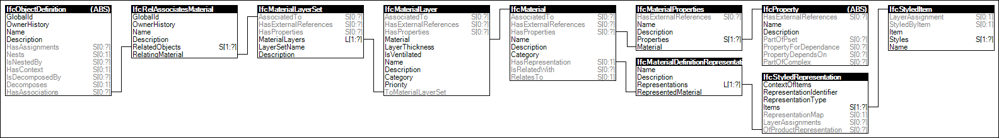

Link to this page
Link to this pageMaterial layer sets are associated with products or product types to indicate a parametric specification of layers having specified thickness filling a boundary defined on the product, or the occurrences of the product type. Examples of such products or product types are slabs, walls, and plates.
Figure 20 illustrates an instance diagram.
 |
Figure 20 — Material Layer Set |